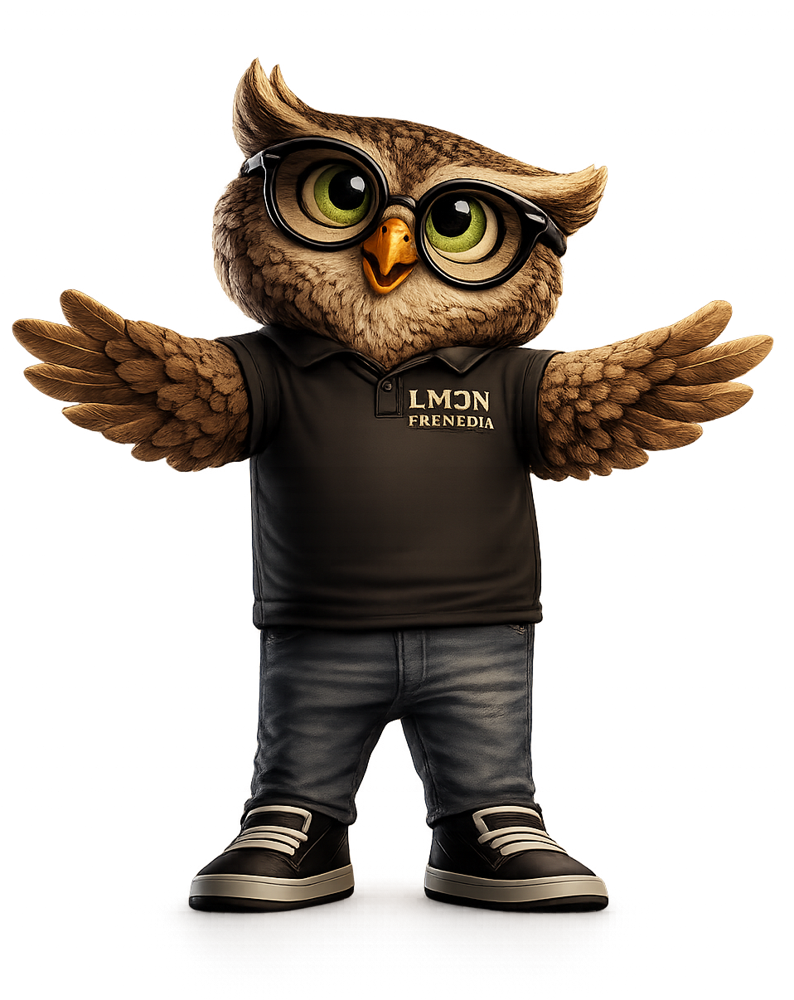

Simulator Area
Visible spectrum (hue wheel)
sRGB (approx)
CMY (illustrative)
Pantone (illustrative)

🦉 OTTO TIP
RGB devices can reproduce more colours than CMYK printing. Some Pantone colours require spot inks for accurate reproduction.
💡 DID YOU KNOW?
- RGB has a larger colour gamut than CMYK.
- Pantone spot colours can reproduce colours outside CMYK.
- Every device has its own colour gamut.
- ICC profiles help map colours between devices.